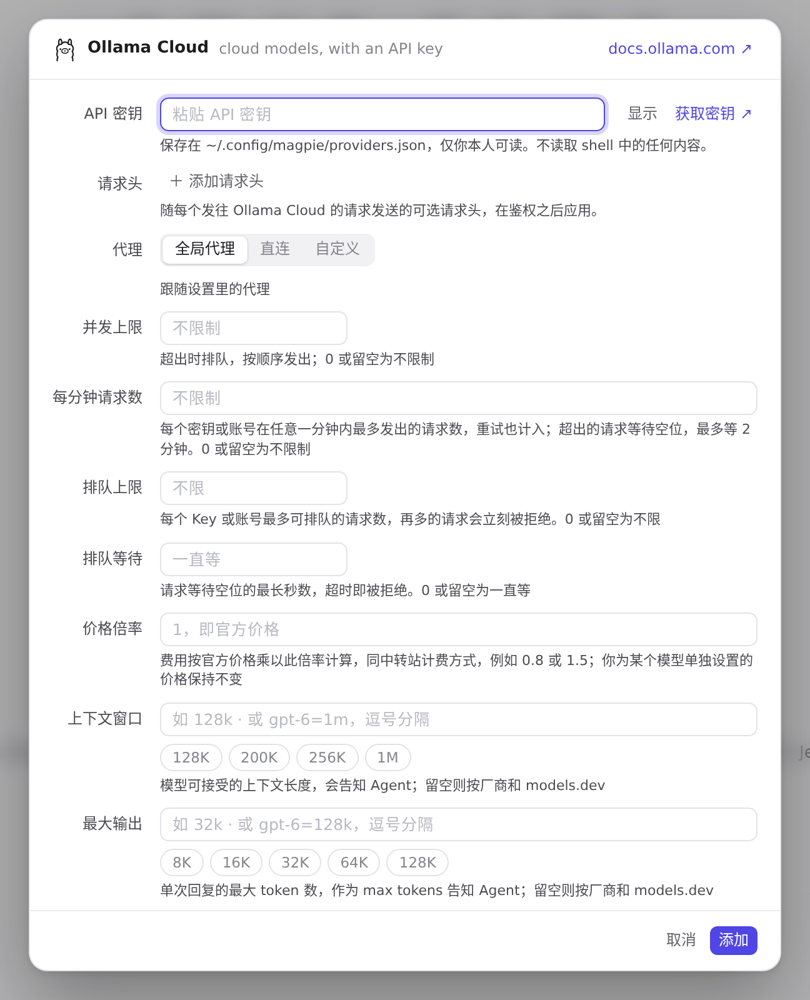
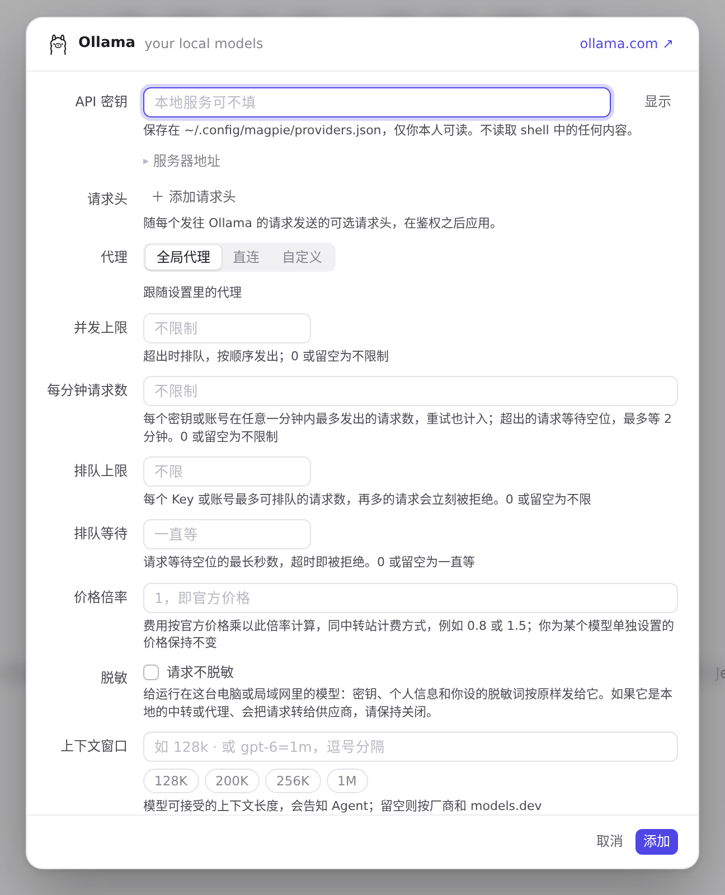
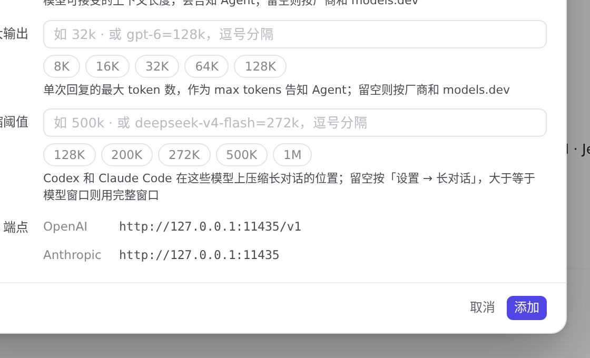

#1165 界面预览
commit 22e0ee9 · 回到 PR · 本机预设（Ollama、LM Studio、oMLX）的添加/编辑编辑器在密钥下方新增折叠的「服务器地址」区，填写地址会把各 API 的 URL 移到该地址上并实时更新终结点预览，无效地址会被拒绝并自动展开、聚焦输入框；预设说明文字也改成「local server, port 1234/8000 by default」。
红线是鼠标走过的轨迹，红色圆环是一次点击；底部文字是这一步在做什么。空格暂停，← → 逐段查看。
 本机预设的服务器地址 · 添加供应商列表：三个本机预设的说明文字
本机预设的服务器地址 · 添加供应商列表：三个本机预设的说明文字

本机预设的服务器地址 · Ollama 的编辑器：密钥下方是折叠的「服务器地址」

本机预设的服务器地址 · Ollama 的编辑器：密钥下方是折叠的「服务器地址」
 本机预设的服务器地址 · 地址输入框与它的占位符
本机预设的服务器地址 · 地址输入框与它的占位符

本机预设的服务器地址 · 填入地址后的终结点预览